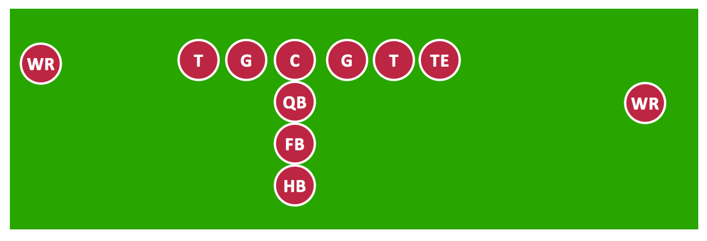
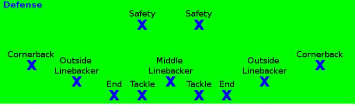
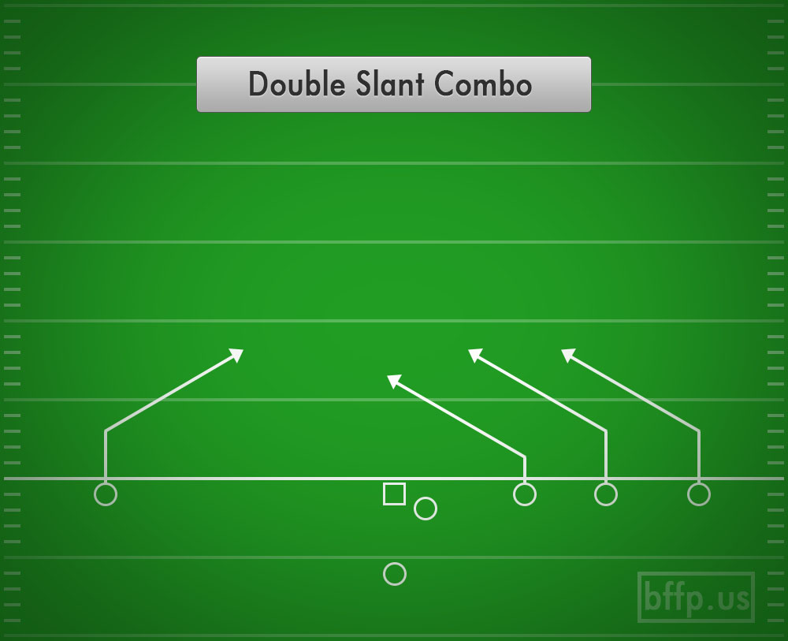
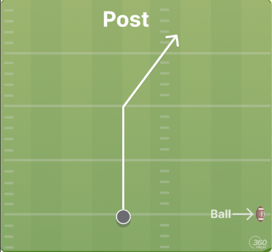
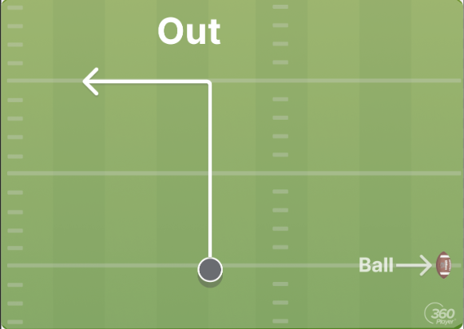

Flag football is a team sport similar to traditional American football, but instead of tackling, players remove a flag from the ball carrier to end a play.
Offense
The offensive teams goal is to advance the ball and score points. Positions include:

Offensive positions in flag football
Quarterback (QB): Leads the offense, passes or hands off the ball.
Right/Left Tackle: Block defenders to protect the QB.
Right/Left Guard: Support blocking and create lanes for running plays.
Center: Snaps the ball to the QB and blocks defensive players.
Wide Receivers (2-3): Catch passes and advance the ball.
Running Back: Runs with the ball and receives handoffs.
Halfback: Another running option, often agile and fast.
Tight End: Blocks and can also receive passes.
Defense
The defensive teams goal is to stop the offense from scoring. Positions include:

Defensive positions in flag football
Defensive Linemen: Stop running plays and pressure the QB.
Linebackers: Support both run defense and pass coverage.
Cornerbacks: Cover wide receivers and defend against passes.
Safeties: Last-line coverage and support against long passes.
Plays & Routes
Plays are planned strategies the offense uses to advance the ball, and routes are the paths receivers take. Examples:

Slant route

Post route

Out route
Running Play: QB hands off the ball to a running back.
Passing Play: QB throws the ball to a receiver on a designated route.
Common Routes: Slant, Out, Post, Fly.
How to Play
Divide teams into offense and defense.
Set up a field with end zones and flags on each player.
Offense starts with a snap; QB decides to pass or run.
Defense tries to remove the flag from the ball carrier.
Repeat plays until time runs out or a set number of points is reached.